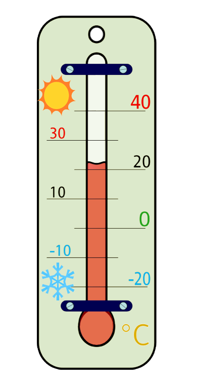

On this page we've gathered useful IELTS speaking vocabulary for Weather topic. It can be used to answer various questions about weather on IELTS Speaking test and will help you achieve a high score.
Temperatures:
- boiling hot: an expression to describe a very hot weather. The last summer was boiling hot, the average temperature reached 40 degrees!
- hot
- mild: warm and pleasant. The weather in my country is mild in spring.
- warm
- chilly: cold.It's chilly today, so I think you should wear a coat.
- freezing cold: very cold. I wanted to go ice skating on the New Year day, but it was freezing cold and I decided to stay home.
- degrees Celsius: used to measure the temperature. In the autumn, the average temperature here is 15 degrees Celsius
- to go below zero: to become negative (about temperatures). The temperature often goes below zero in the winter.
Cloudy weather:
- gloomy: weather with dark clouds and dull light. Personally, I don’t like gloomy weather. It makes me feel depressed.
- clear: without clouds. I adore clear weather, when there are no clouds on the sky.
- to clear up: when clouds and rain disappear. After a long rain, it finally cleared up.
Rainy weather:
- to be drenched (to the skin): to be completely soaked with water. I forgot to take an umbrella and was drenched in the rain.
- gentle rain: light rain.
- drizzle: a light rain that falls in very small drops. It often drizzles in the morning.
- downpour: a heavy fall of rain. What a downpour! We are drenched to the skin.
- to pour down: to rain heavily. I like rainy weather. When it pours down, we sit at home with my family, talk and drink hot tea.
- humid: containing a high amount of water. In my country the climate is generally cold and humid, especially in the north.
Snowy weather:
- snow-covered: covered with snow. In the winter my family and I go skiing to the snow-covered hills of Switzerland.
- heavy snow: when a lot of snow falls. Children went to school in spite of the heavy snow.
- frosty: cold. Continental climate implies hot summers and frosty winters.
- snowstorm: large amounts of wind and snow. I don’t like winters because of frequent snowstorms.
- hail: when small balls of ice (hailstones) fall from the sky. After the hail, we found hailstones that were the size of golf balls!
Windy weather:
- high wind = strong wind. In the autumn strong winds are quite frequent.
- breeze: a nice gentle wind. I don’t usually like windy weather, but a light breeze from the ocean makes me happy.
- wind chill factor: when the wind makes the air feel colder than the real temperature. In my hometown it’s very windy in the winter. And though the temperature rarely goes below zero, with wind chill factor it feels like minus 10!
Sunny weather:
- sunshine: the heat and light of the sun. I love summertime because of the long days and bright sunshine.
- dry: with no rain. Summers in Turkey are often hot and dry.
- heat stroke (sun stroke): a serious heat illness because of being too long in hot weather. It’s often boiling hot in my city in the summer and a lot of people suffer from heat stroke.
Other vocabulary:
- a spell of good weather: a period of good weather. You can use other adjectives instead of "good" to describe weather.After a three-day spell of rainy weather, there was a spell of sunny weather.
- changeable weather: weather that often changes. In my country the weather is very changeable, periods of hot weather can be followed by heavy rains or even snowstorms!
- mild climate: a climate without extreme weather conditions.
- smog: a cloud of pollution. My town is so polluted that I don’t see stars at night because of thick smog!
- forecast: a prediction of how the weather will change. Although the forecasts predicted a mild winter, the January was freezing cold.